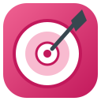
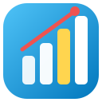

Questões no estilo TCF, DELF, DALF e TEF — organizadas em conjuntos por nível e por matéria, com caderno de revisão e estatísticas completas do seu progresso.
Resolver conjuntos de questões e acompanhar sua evolução.
Acompanhar os conjuntos que você já começou e rever o resultado dos que já concluiu.
Em breve: novos formatos de questões para tornar a prática ainda mais dinâmica.

Criar conjuntos personalizados, escolhendo níveis, categorias, quantidade de questões e tempo.
Gerenciar todas as questões marcadas para revisão e criar novas sessões de estudo.

Visualizar gráficos, desempenho, evolução e histórico completo da Plataforma de Questões.